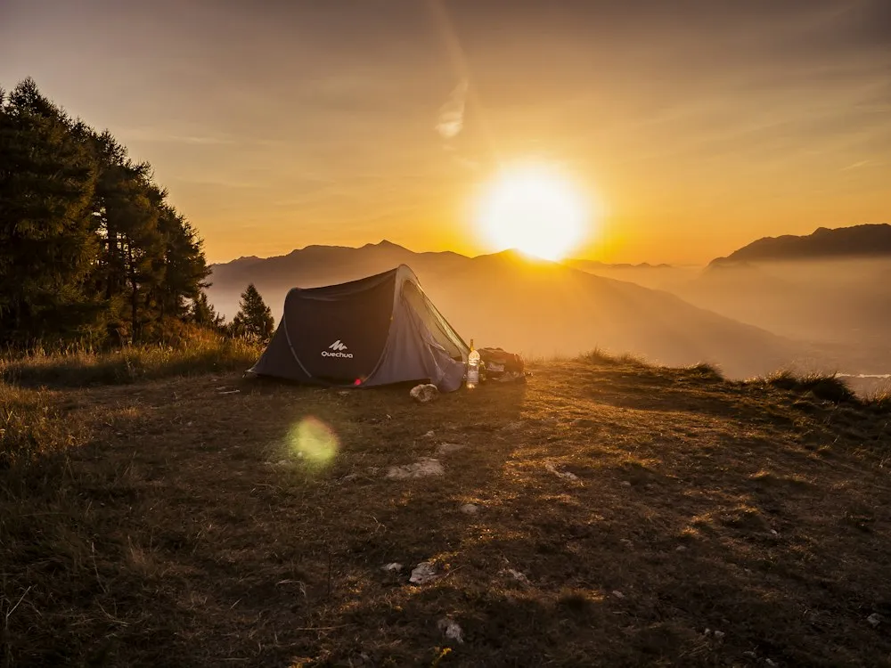

Expert trail survival guides, alpine gear breakdowns, high-altitude acclimatization tips, and captivating first-hand expedition dispatches from certified mountain leaders.
FEATURED GUIDE • 9 MIN READ
Survival & Safety 9 Min Read 18 Nov 2026
Surviving -25°C: The Definitive Alpine Winter Bivouac Guide
When temperatures plummet below freezing on high Himalayan ridges, moisture management, caloric pacing, and thermal trapping separate survival from catastrophe. Here is how our certified sherpas prepare winter basecamps.
Tenzing Norbu
IMF Alpine Master & Lead Sherpa
Fresh Field Dispatches
Latest Adventure Articles & Trail Lore
Written directly by expedition leaders, wilderness medics, and certified outdoor navigators.
Trekking • 6 Min
12 Nov 2026 Himachal
The Ultimate 7-Day Hampta Pass Crossing: Valley of Contrasts
How green alpine Kullu pine meadows transform into the stark, barren moonscapes of Spiti within a 3-hour ridgeline traverse.
Safety • 8 Min
08 Nov 2026 4,500m+
High Altitude Sickness (AMS): Medical Prevention & Rules
Understanding the physiology of oxygen deprivation at 4,000+ meters, pulse oximetry threshold metrics, and descent emergency rules.
Water • 5 Min
02 Nov 2026 Rishikesh
Navigating Grade IV Rapids: Whitewater Physics in Rishikesh
Hydraulics, recirculating holes, and aggressive forward recovery strokes in the turbulent gorges of the Ganges River.
Aerial • 6 Min
28 Oct 2026 Bir Billing
Riding the Dhauladhar Thermals: A Pilot’s Guide to Bir Billing
Why the Dhauladhar mountain range creates one of the top three natural thermal lift highways on planet Earth for paragliders.
Ocean • 7 Min
20 Oct 2026 Havelock
Diving the Andaman Coral Sanctuary: Reefs & Marine Giants
Underneath the turquoise shallows of Havelock Island lies an underwater ecosystem of fringing coral reefs and pelagic predators.
Overland • 9 Min
14 Oct 2026 Ladakh
Conquering the Manali-Leh Highway: 474km of High Altitude
From Rohtang Pass to Tanglang La at 5,328 meters—fuel staging, high-clearance 4x4 mechanics, and route survival.
Wildlife • 6 Min
05 Oct 2026 Corbett
Tracking the Royal Bengal Tiger: Pugmarks & Canopy Clues
How master forest trackers read deer alarm calls and fresh dust scat in the dense Sal jungle canopy of Corbett National Park.
Nature • 5 Min
29 Sep 2026 Meghalaya
The Bio-Engineering of Meghalaya’s Living Root Bridges
Century-old Ficus elastica root bridges woven across thundering monsoon canyon rivers in the wettest place on Earth.

Camping • 5 Min
21 Sep 2026 Pangong Tso
Bortle Class 1 Skies: Astrophotography in Pangong Tso
Zero light pollution, crystal-clear high altitude air, and the Milky Way arching across cobalt Tibetan lakes at midnight.
No matching articles found
Try adjusting your keyword or reset to All Stories.
Alpine Dispatch
Subscribe to The STACKLY Field Dispatch
Get monthly survival handbooks, secret trail coordinates, gear discounts, and upcoming expedition releases delivered to your inbox. No spam, ever.
From Reading to Living
Inspired by These Stories? Your Expedition Awaits.
Turn inspiration into real adventure. Explore our multi-day packages and adrenaline day experiences with certified guides.